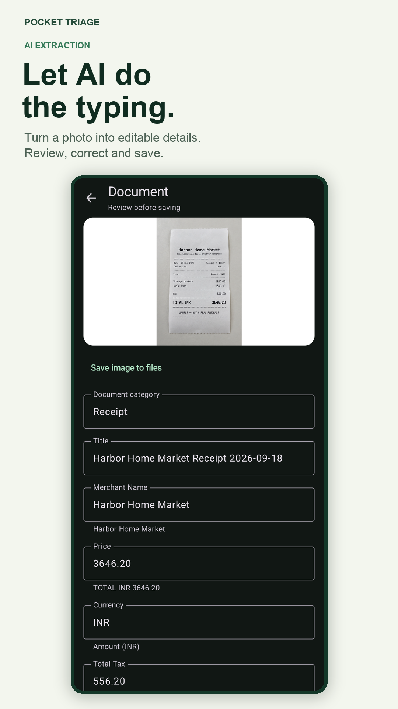
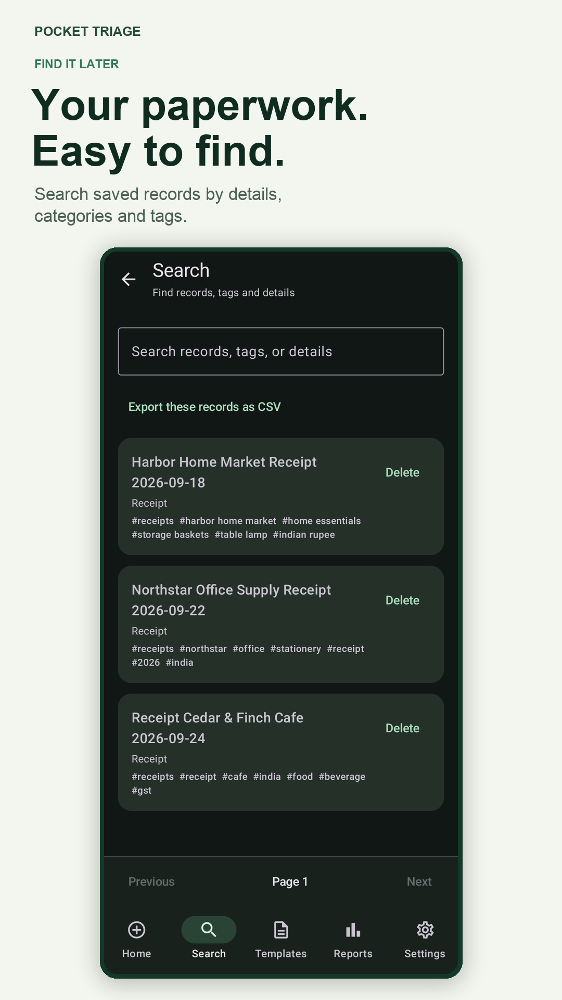
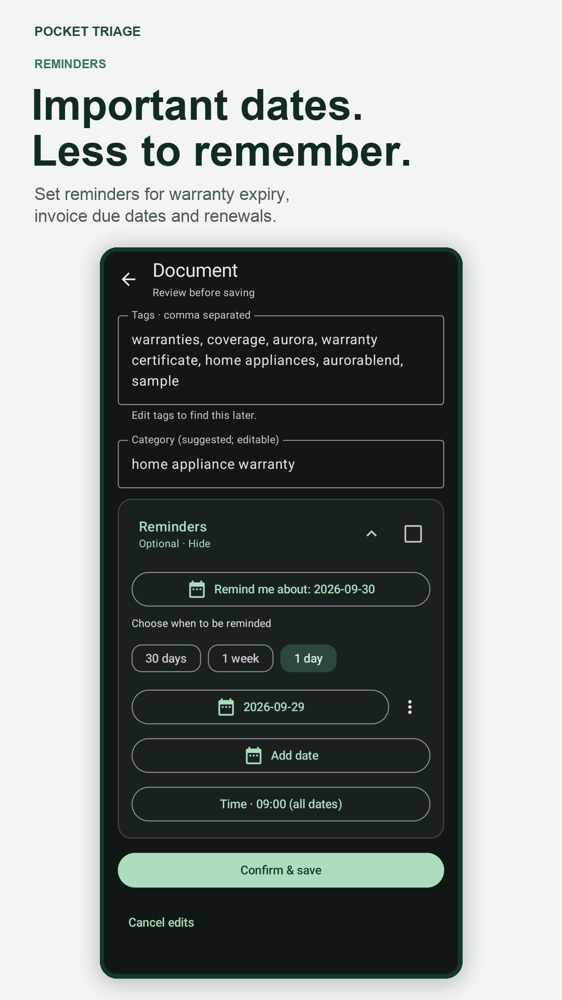
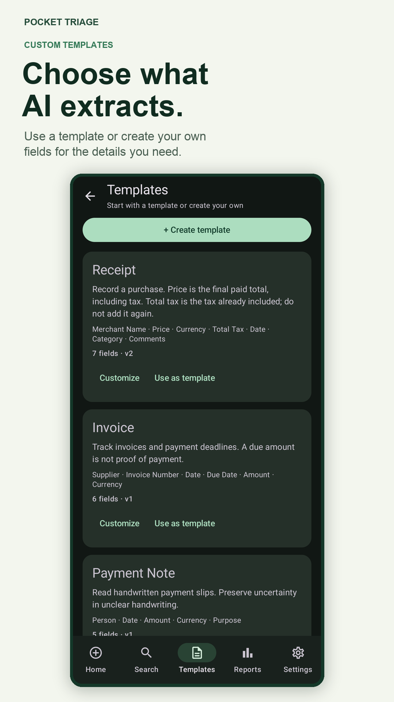

Receipts and purchases
Save merchant, amount, tax and date details. Add a category or a trip, project or household tag to find a purchase later.
Paperwork, easier to manage
Pocket Triage uses AI to turn receipt and document photos into editable details. Review what it finds, organize records with categories and tags, then search, export or set reminders when you need them.
Get Pocket Triage on Google PlayAndroid · 10 lifetime free scans · Review extracted details before saving
Take a photo or choose an image, select a template and review the details AI finds. The original image stays with the saved record so you can check it later.




Save merchant, amount, tax and date details. Add a category or a trip, project or household tag to find a purchase later.
Capture hotel, restaurant and transport receipts as you go. Group related records with a trip tag, then search or export the records you need.
Organize work purchases by category or project. Filter reports by date, category and tag before exporting selected records.
Keep proof of purchase and warranty paperwork together. Check the expiry date against the original terms, then set a reminder.
Save invoice details and set a reminder for a due date. Use templates for insurance, memberships and other records with dates to track.
Choose or adapt a template with fields that fit a document type. Review extracted values; AI can misread unclear images.
AI extraction is a starting point, not a guarantee. Check amounts, names, account details and dates against the original document. Pocket Triage does not determine whether a warranty claim is valid, whether an invoice has been paid or what a tax authority will accept.
Saved records and images are stored on your device. Scanning requires an account and an internet connection because selected images are sent to the service for extraction. Export a ZIP backup when you want a recoverable copy; backups do not sync automatically between devices.
Paid plan availability and price are shown in Google Play before purchase. Your saved records, search, reports and exports remain available if a subscription ends.
See Pocket Triage on Google PlayYes. Choose the receipt template, capture or import an image, then review and correct the AI-extracted fields before saving.
Yes. Add categories and tags to saved records, search them later, filter reports and export the records you need.
You can add reminders to dates on a record. Confirm suggested dates against the original document; choose a date yourself if no reliable date was found. Android notification permission and device settings apply.
No. Saved records are stored on your device. You can export and import a ZIP backup, but that is not automatic multi-device synchronization.
Email support@quiteaitools.com. See the privacy policy or account deletion instructions.
Scan, review and organize the records you want to find again.
Download Pocket Triage